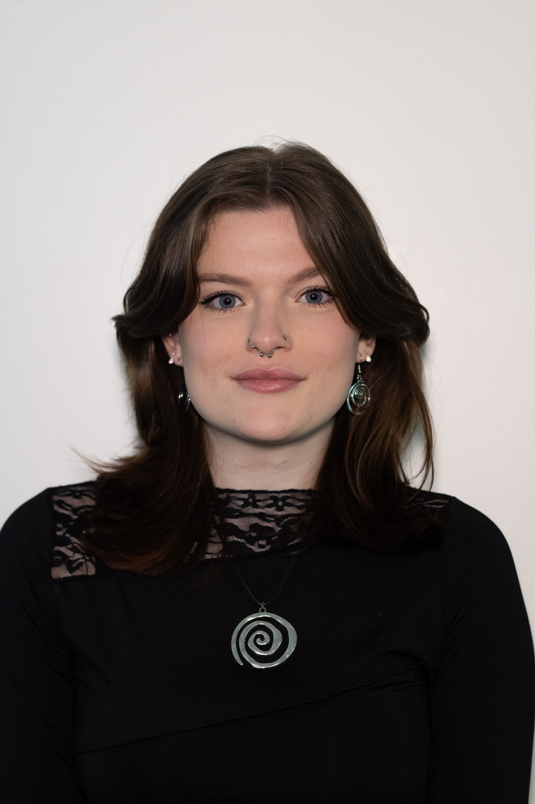

My name is Abigail Ratley and I am a third-year Media Production at Nottingham Trent student predicted to graduate with a First.
In my second year I completed a semester abroad through the International Exchange Scheme, where I studied as a Digital Media Arts major and achieved a 4.0 GPA.
Across both programmes I have developed skills in Adobe Creative Cloud (Photoshop, Premiere Pro, After Effects, Audition and XD), HTML and p5.js, professional
camera operation, graphic design and branding, and production management.
Throughout my degree I have gained experience working both independently and collaboratively to deliver high- quality creative work under tight deadlines.
I am eager to apply my creativity, organisation, and technical skills in a professional environment where I can continue to grow and contribute effectively.
My primary interest is full stack website development. I created this portfolio website as my first coding project in America using HTML and bootstrap,
but have since learnt more advanced skills such as CSS, PHP and Javascript.
My first professional website development project for an external client was for Cherry Cork Studios, a start-up with minimal branding when I approached them,
so I developed their colour schemes, typography pairings, and logo design prior to beginning the website; then designed, built, published and continually update and maintain.
See my CV here or contact me via email "abigailratley@hotmail.co.uk" phone "07403873901" or LinkedIn "Abigail Ratley"